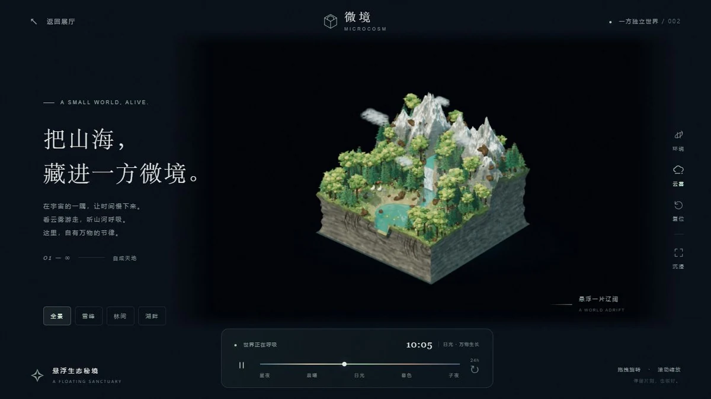

微境 MICROCOSM
一方独立世界 / 002
A SMALL WORLD, ALIVE.
把山海，
藏进一方微境。
在宇宙的一隅，让时间慢下来。
看云雾游走，听山河呼吸。
这里，自有万物的节律。
01 — ∞自成天地
正在唤醒这方世界 · · ·

当前设备无法开启三维场景，先欣赏这方微境。
A SMALL WORLD, ALIVE.
在宇宙的一隅，让时间慢下来。
看云雾游走，听山河呼吸。
这里，自有万物的节律。

当前设备无法开启三维场景，先欣赏这方微境。